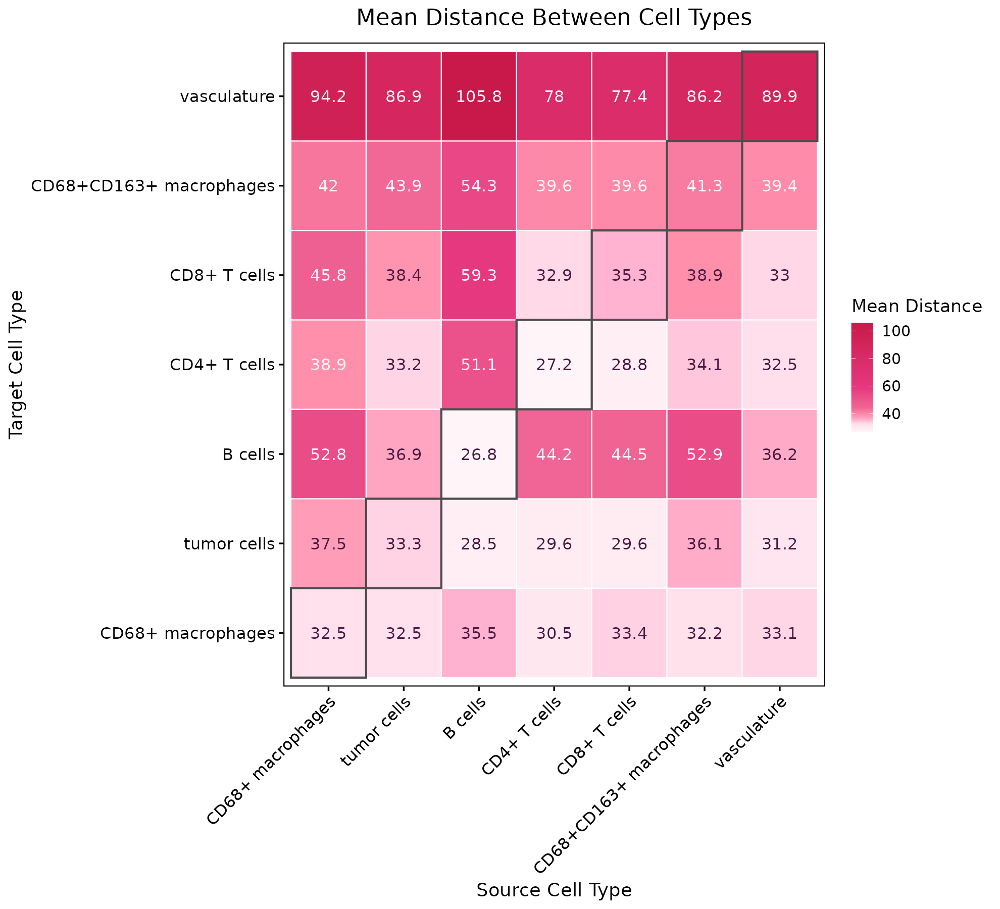
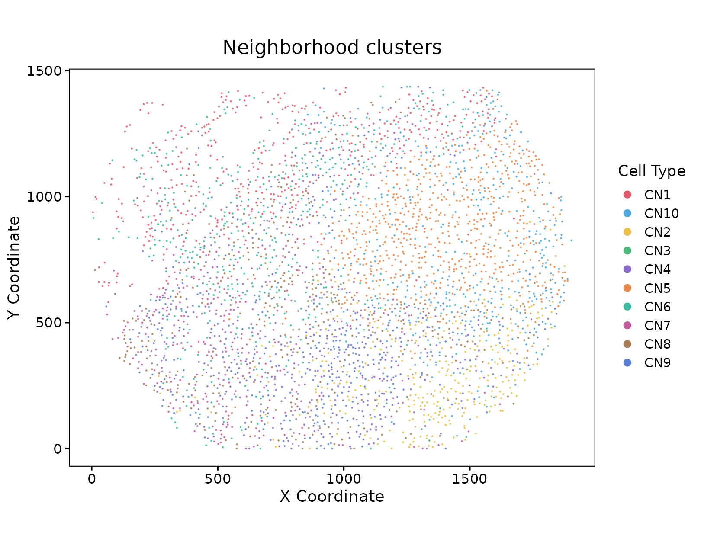
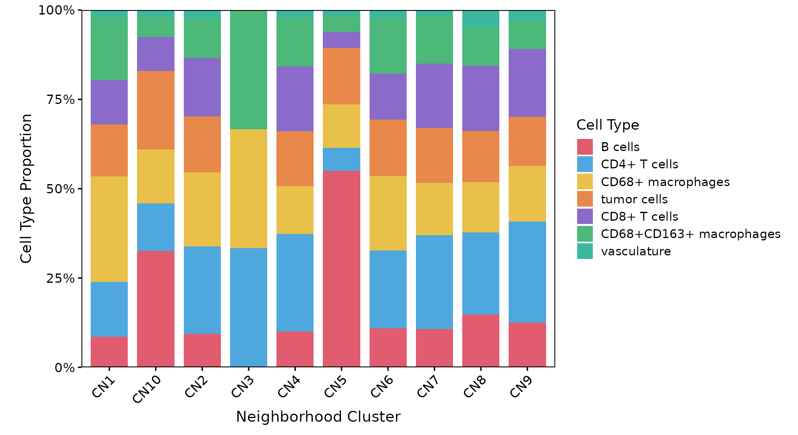
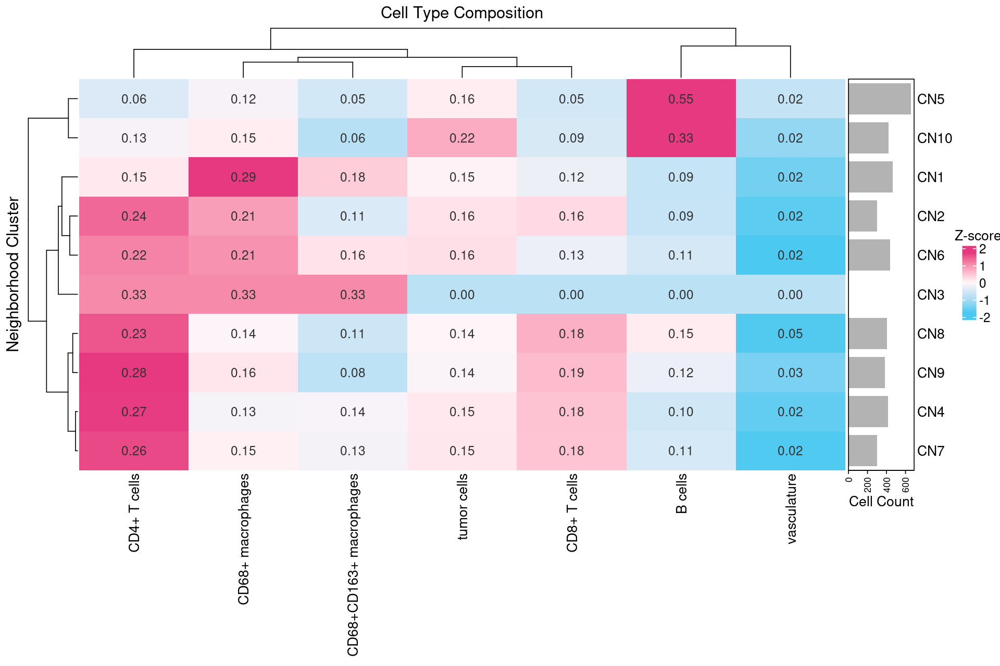
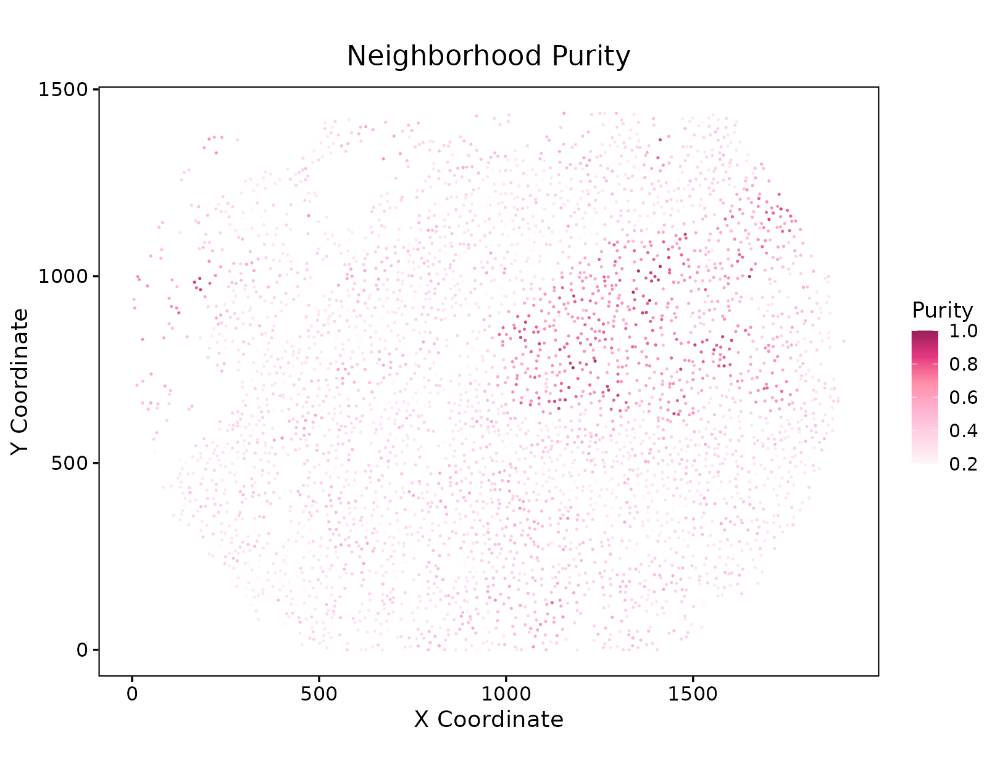
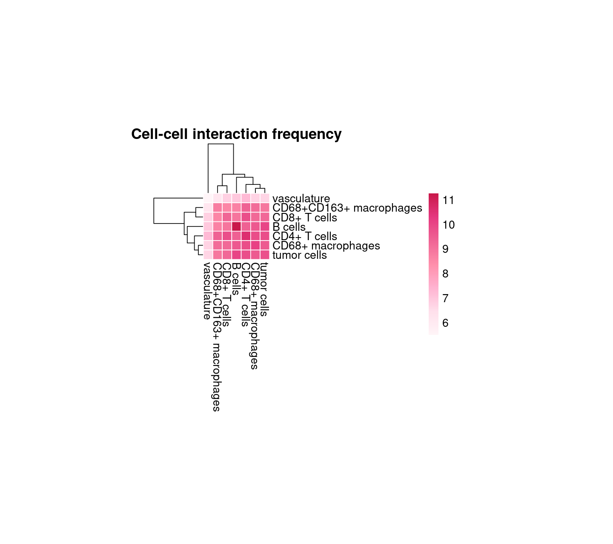
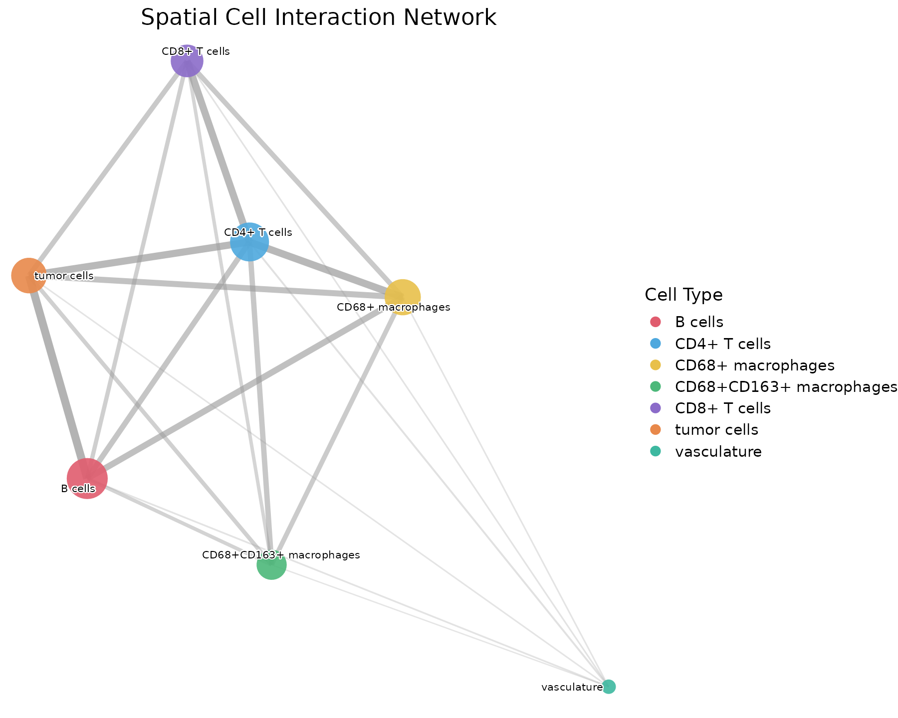
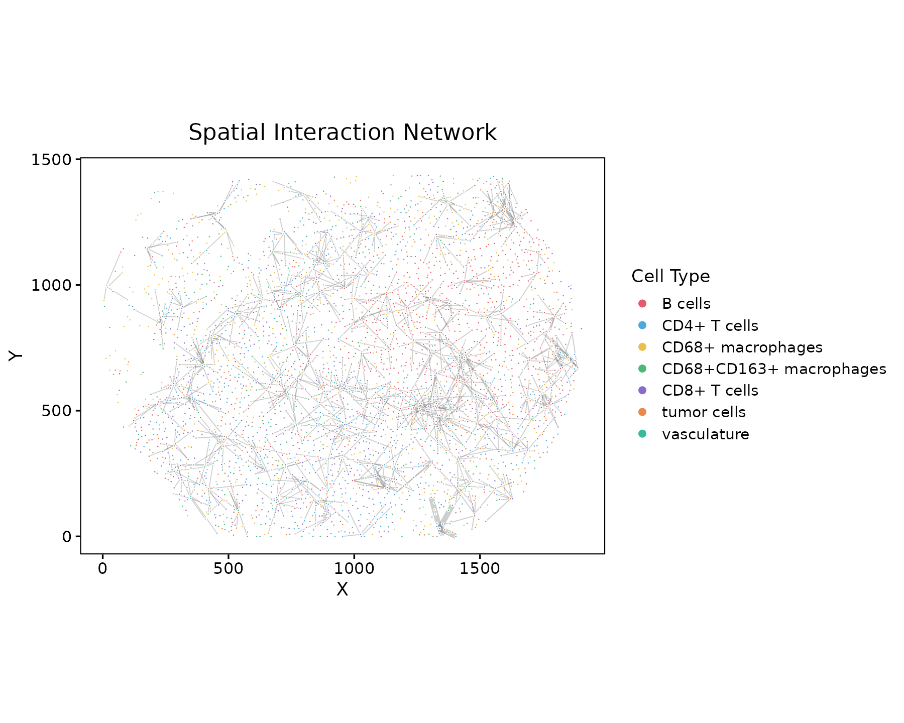
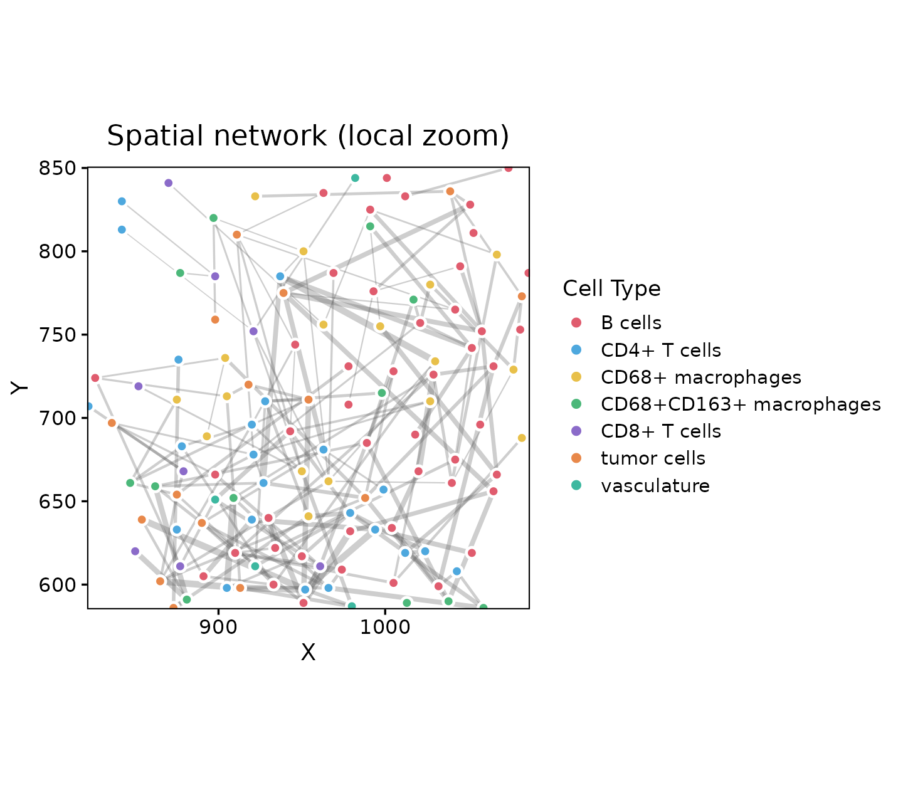

Overview
This module builds adaptive spatial graphs, derives neighborhood features and clusters, and visualizes distances, composition, purity, and cell-cell interactions.
Demo: reg055_A (CODEX CRC, Schurch et al. 2020) with annotated cell-type labels from the annotation tutorial.
Load packages and prepare data
library(Sphinx)
library(data.table)
library(dplyr)
library(ggplot2)
# meta: Cell_ID, X, Y, celltype
df <- prepare_data(
meta, cell_id_col = "Cell_ID", x_col = "X", y_col = "Y",
celltype_col = "celltype"
)Spatial distribution
visualize_spatial_distribution(
df, point_size = 0.45, point_alpha = 0.95,
title = "Annotated cell types"
)
Cell-type distances
dist_result <- calculate_celltype_distances(df, celltype_col = "celltype")
visualize_distance_heatmap(dist_result, show_values = TRUE)
visualize_distance_parallel(dist_result)
Build spatial network
build_spatial_network() selects a graph method (auto / knn / radius / delaunay / window) and applies biological edge filtering (mutual nearest neighbors and distance gating where configured).
edges <- build_spatial_network(df, method = "auto", celltype_col = "celltype")
feat <- calculate_neighborhood_features(df, edges, celltype_col = "celltype")
clus <- cluster_neighborhoods(feat, edges, method = "kmeans", k = 10)Neighborhood clusters & composition
visualize_spatial_distribution(
clus, celltype_col = "Neighborhood_Cluster",
point_size = 0.45, title = "Neighborhood clusters"
)
comp <- calculate_cluster_composition(clus)
plot_composition_barplot(comp)
plot_composition_heatmap(comp, cell_fontsize = 10)


Neighborhood purity
pur <- calculate_neighborhood_purity(clus, method = "knn", n_neighbors = 10)
visualize_neighborhood_purity(pur, point_size = 0.55)
Interactions
intx <- analyze_spatial_interactions(clus, edges, celltype_col = "celltype")
visualize_interaction_heatmap(
intx$interaction_matrix, transform = TRUE,
display_numbers = FALSE, cellwidth = 10, cellheight = 10
)
visualize_interaction_network(intx$network)

Spatial network graph (real edges)
Points are opaque with a white halo so colors remain clear over edges. For overview plots use edge_mode = "top"; for local zoom, shrink zoom_radius and downsample edges with edge_mode = "random" so structure stays readable.
visualize_spatial_network(
clus, edges, edge_mode = "top", top_n = 1200,
point_size = 0.5, point_alpha = 1
)
cx <- mean(range(clus$X)); cy <- mean(range(clus$Y))
zr <- max(diff(range(clus$X)), diff(range(clus$Y))) * 0.07
visualize_spatial_network(
clus, edges,
edge_mode = "random", max_edges = 180,
zoom_center = c(cx, cy), zoom_radius = zr,
point_size = 2.2, point_alpha = 1,
title = "Spatial network (local zoom)"
)
